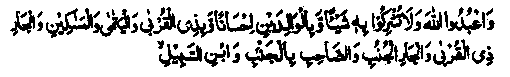

Chapter One · Section (b): Ahadith on the virtues of spending for the cause of Allah
14. Annoying the neighbours
Two, not to cause any difficulty for a neighbour. This is the least of the obligations towards a neighbour. In fact, considerable emphasis has been laid on this matter in the Traditions. Many Traditions narrated by the Shaikhain (Bukhari and Muslim) tell us, "Treat your neighbour well", and in some of them it is said, "Be kind to the neighbour' /meaning: ‘Help him whenever he is in need and save him from any adversity’. In one Hadith, Rasulullah Sallallaho alaihe wasallam has said, "Do the people know their obligations to the neighbour? They are: help him whenever he asks for it, give him a loan when he wants it, help him if he is needy, visit him in his sickness; in the event of death, accompany the funeral; congratulate him on his happy occasions; condole with him in adversity, do not build your house higher than his without his permission, lest the ventilation of his house is obstructed; if you buy some fruit, send some of it to him as a present and, if you cannot do so, take the fruit into your house covered up, so that he cannot see it and make sure that your children do not take the fruit out of the house and make his children grieved, and do not let your smoke cause him annoyance, unless you are cooking something that you propose to share with him!'
You now appreciate and understand the rights of a neighbour. Rasulullah Sallallaho alaihe wasallam then swore by Allah and said, "No one will ever understand these rights of the neighbour unless Allah has mercy on him". This Hadith has been narrated by Imaam Ghazali Rahmatullah alaihe in the Arba'een and by Hafiz Ibne Hajar Rahmatullah alaihe in Fath-ul-Bari. Another Hadith says that Rasulullah Sallallaho alaihe wasallam said, repeating his words three times, "By Allah, he is not a Mo’min, By Allah, he is not a Mo’min, By Allah, he is not a Mo’min!" Someone asked as to who it was. Rasulullah Sallallaho alaihe wasallam said, "The person who causes suffering to his neighbour." Another Hadith says that such a person will never enter Jannah.
Aishah Radhiallaho anha and Ibne Umar Radhiallaho anho both have narrated the saying of Rasulullah Sallallaho alaihe wasallam, "Jibra’il Alaihissalam has been repeatedly stressing upon me the rights of the neighbours, so much so that I thought he would be made to share the inheritance. Allah Ta'ala has ordered in the Holy Qur’an.

"You understand worship of Allah and do not attribute any partner with Him, be kind and good to your parents, also to other kinsmen, orphans, the poor, near and distant neighbours, your associates and the wayfarers". (an-Nisaa: 36)
The near neighbour is the one next to your house, and the distant one that living at a distance. Someone asked Hasan Basri Rahmatullah alaihe about the extent of neighbourhood. He said, "Forty houses in front, forty behind, forty to the right and forty to the left" Abu Hurairah Radhiallaho anho is reported to have said that a beginning should be made from the nearest and not from the one living farther away. Aishah Radhiallaho anha asked Rasulullah Sallallaho alaihe wasallam, "I have two neighbours, with whom should I begin?" Rasulullah Sallallaho alaihe wasallam said, "The one whose door is closer to yours". Ibne Abbas Radhiallaho anho has related this differently by saying that the nearness of a neighbour depends on his relationship: he is near, if he is related, while the one not related is the far one. Nauf Shaami Rahmatullah alaihe has related that the near neighbour is the one who is a Muslim and the far one is the non-Muslim. (Durre Manthur)
The version given in Musnad Bazzar and others, relates Rasulullah Sallallaho alaihe wasallam as saying that there are three types of neighbours:
First, the one having three rights, those of neighbourhood, kinship and Islam; second having rights of neighbourhood and Islam; third, he who has only one right and that will be a non-Muslim. Neighbourhood has thus been classified into three grades. Imaam Ghazali Rahmatullah alaihe has also narrated this particular Hadith and has said that Islam has given a preference even to a non-Muslim over a Muslim due to neighbourhood.
Another Hadith says that the first case to be settled between two persons on the Day of Judgement, will be one about rights of neighbourhood. A person came to Abdullah Ibne Mas‘ood Radhiallaho anho and complained bitterly about his neighbour. Ibne Mas‘ood said to him, "Go and do your business; if he has disobeyed Allah Ta'ala in regard to you, you must avoid disobeying Allah in his respect." An authentic Hadith says that a woman’s way of living was described before Rasulullah Sallallaho alaihe wasallam, that she was regular in her Tahajjud Salaat and fasted frequently but molested her neighbour. Rasulullah Sallallaho alaihe wasallam said, "She will enter Jahannam, though she might be taken out of it after undergoing her punishment". Imaam Ghazali Rahmatullah alaihe has said that not to trouble him is not the only right of a neighbour; to bear patiently any trouble from him is also one of his rights.
Ibnul Muqaffa Rahmatullah alaihe used to sit frequently in the shadow of his neighbour’s wall. He came to know that the neighbour was in heavy debt and was about to sell his house to pay the debt. He said that he always enjoyed the shadow of the neighbour’s wall and did not pay anything for that; so, he presented to the neighbour the price of his house and told him that, since he had received the price, he should not sell it
The slave of Ibne Umar Radhiallaho anho slaughtered a goat; Ibne Umar told him that after skinning the goat he should first give a share of the meat to his Jewish neighbour and he repeated these words several times. The slave enquired why he was repeating the same words. Ibne Umar Radhiallaho anho said that he heard Rasulullah Sallallaho alaihe wasallam saying that Jibra’il Alaihissalam repeated himself several times in stressing the neighbour’s right; that is why he too was repeating it again and again.
Aishah Radhiallaho anha has said that good conduct comprises ten qualities. Sometimes these are seen in a son and not in the father. The slaves may have them, while the masters may not" These are a gift from Allah Ta'ala to whomsoever He may grant: -
1. Speaking the Truth.
2. To be honest with people.
3. To grant favour to a deserving needy person.
4. To return a good turn.
5. To be kind to the kinsmen.
6. To take care of a trust
7. To fulfil the rights of a neighbour.
8. To be dutiful to a comrade.
9. To discharge obligations towards a guest.
10. At the root of all these is modesty. (Ihya)